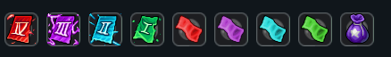

Potwory Chaos są epickimi wersjami normalnych potworów, które mogą pojawić się na dowolnym spawnie. Każdy zwykły potwór ma 5% szansy na narodzenie się jako Chaos.
Oprócz normalnego lootu, potwory Chaos mogą dropić dodatkowe epickie przedmioty. Dodatkowy loot jest dostosowywany do rekomendowanego poziomu potwora. System skaluje się w sposób progresywny między poziomem 10 aż do poziomu 500 – im silniejszy potwór, tym większe szanse na rzadkie nagrody:

| Poziom Potwora | Dodatkowa Szansa na Drop |
|---|---|
| Między poziomem 10 a 50 | +1% dodatkowej szansy |
| Poziom 100 | +2% dodatkowej szansy |
| Poziom 200 | +3.5% dodatkowej szansy |
| Poziom 300 | +5% dodatkowej szansy |
| Poziom 400 | +6.5% dodatkowej szansy |
| Poziom 500 lub powyżej | +8% dodatkowej szansy |
Esencja Chaosu to ekskluzywny zasób dropiony przez Potwory Chaos. Każdy pokonany potwór Chaos dropi dokładnie 1 Esencję Chaosu i jest to jedyny sposób, aby ją zdobyć.
Zasób ten jest używany do uzyskania dostępu do Bossów Chaos, gdzie możliwe jest zdobycie ekskluzywnych zestawów ekwipunku (setów) z ochronami żywiołowymi, takich jak między innymi: Emerald Set, Crystal Set, Ocean Set.
Ważne Uwagi:
• Tylko normalne potwory mogą narodzić się jako Chaos.
• Potwór zachowuje swój normalny loot + otrzymuje dodatkowy loot z tabeli.
• Nazwa "Chaos" zawsze identyfikuje te potwory w grze.
• Esencja Chaosu nie posiada żadnego innego źródła pozyskania oprócz Potworów Chaos.